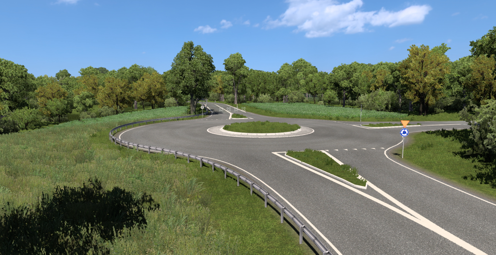
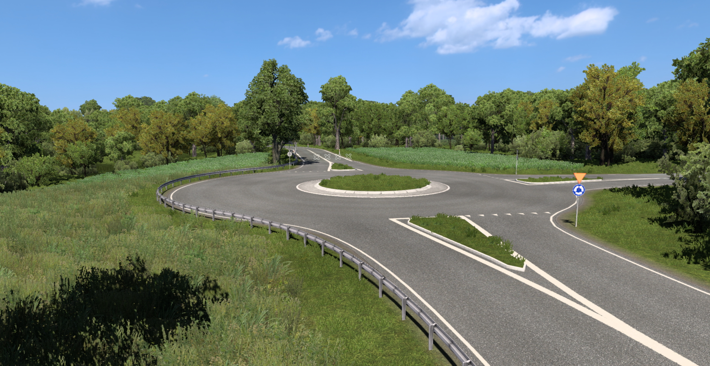

27.09.2024
Wydanie
Aktualizacja 9.1 jest już dostępna!
W tej aktualizacja zostały przebudowane:
- DK11 i DW165 Koszalin -> Piła (w tym obwodnica Szczecinka S11)
- DK25 Bobolice -> Biały Bór
- DK10 i DK11 Obwodnica Piły.
Dodatkowo została otwarta DK11 Podgaje -> Piła.
W ramach aktualizacji remontów zmianie uległy ul. Chałubińskiego, Szczecińska (wraz z nową ulicą Ekonomiczną, ukryta) i Włoska, budowa S6 Sianów -> Słupsk oraz skrzyżowanie DW163 z DW152.
W związku z zakończeniem wsparcia dodatku na linie autobusowe, mapa w wersji 9.1 ulegnie zmianie. Niektóre drogi (zwłaszcza te o mniejszym znaczeniu) zostaną oznaczone jako sekretne. Na mapie pozostaną przede wszystkim główne ulice miasta.

 
